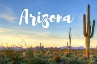

Nature & Wildlife
(for monthly updates)
At its peak, Tombstone is said to have been the fastest growing city between St. Louis and San Francisco. There were over one hundred saloons, numerous restaurants, a large red-light district, schools, churches, newspapers, and one of the first public swimming pools in Arizona (which is still used today). The most famous event in Tombstone’s history was the famed Gunfight at the OK Corral, which didn’t actually happen at the corral,but in a vacant lot on Fremont Street. On October 26, 1881 members of the “Cowboys” had a run-in with Wyatt, Virgil and Morgan Earp with help from Wyatt’s friend Doc Holliday. 24 seconds and 30 shots later, Billy Clanton, Tom and Frank McLaury were mortally wounded. In many people’s opinion, it was this one event that has kept Tombstone alive for all these years.
The cactus wren is the official state bird. It grows seven to eight inches long and likes to build nests in the protection of thorny desert plants like the arms of the giant saguaro cactus. The Arizona ridge-nosed rattlesnake is perhaps the most beautiful of all eleven species of rattlesnakes found in Arizona. The ringtail is the official state mammal. The ringtail is a small fox-like animal about two and one-half feet long and is a shy, nocturnal creature. The Arizona tree frog is the state official amphibian. The frog is actually between three-quarter to two inches long.
{kind=link}